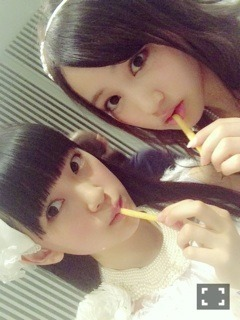

2014/1129Satかるぱっちょっ
お仕事が終わって帰っていたら
途中でいつもより肩が軽いなぁって
思ってパッと背中をみたらリュック
が無くて(>_<)
どうやら仕事場に忘れたみたい。
リュックを背負ってない事に
気づかずにテクテクと歩いていた
自分が怖くなりました笑
それで急いで戻ったらその場にいた
スタッフさんやメンバーに
大爆笑されて
恥ずかしかったです(>_<)
こんばんは！
堀未央奈です
ベストヒット歌謡祭
ベストアーティスト
見てくださった方々
ありがとうございました。
12月3日はFNS歌謡祭
12月26日はMステスーパーライブ
に出演させていただきます٩꒰｡•◡•｡꒱۶
1年の締めくくりとして
頑張るので是非見てください！

ウ

イ

ン

ク
ベストアーティストで
みなみとウインクをしました♪♪
楽屋の席が隣で話してて
2人でしよっかってなりまして
755で「ウイ」「ンク」ってヒント
を出して......本番緊張したけど
うまくできたかな、、
ちなみにこの日のテーブルのメンバー
ちはるさん生田さんみなみ私は
全員お弁当を2つずつ食べました！

渋谷PARCO前がキラキラ！
冬のあったかい雰囲気が大好き！
何処を歩いてもキラキラしていて
音楽も流れてていつもは足早に
通り過ぎる場所も立ち止まって
見るようにしています
毎年、早々とお部屋を装飾して
チキンを作ったり我が家の愛犬に
サンタの洋服を着せたり
家族を巻き込んで楽しむの(｡•ㅅ•｡)♡

お母さんから送られてきた写真！
今の待ち受けです☆
ちなみに女性スタッフさんの待ち受け
は私のぷくーってした顔の写真なの笑
昔から私の周りにいる人は幸せに
なるっていうジンクスがあって
私の近くにいると良い事が沢山
起こるって中学生の時に言われ出して
じわじわ広まって
私を待ち受けにする友達もいたり
知らない後輩に握手を求められたり笑
その話をスタッフさんに話したら
待ち受けにしてくれました٩꒰｡•◡•｡꒱۶
招き猫といえば、
先日絢音と純奈と
"神様の言うとおり"を観てきました！
チュリトスを食べるか
チキンを食べるか迷いながら
満面の笑みでメニューを見ている私に
声をかけてくださった方が何人かいて
恥ずかしかったけど嬉しかったです♪♪
へへヽ(*・ω・*)ﾉ


映画は...
とにかくドキドキしたし
次どうなるんだろうって考えるのが
凄く楽しかったです(｡･ω･｡)
ちなみに真ん中の後ろの1番いい席を
私と絢音で予約していて純奈は急遽
一緒に行く事になったので
私 絢音 ○ ○ 純奈っていう
2人挟んでの席になっちゃって...
純奈大丈夫かなって始まる前に
チラッとみたら
チュリトスを食べながらケロッと
していて安心しました笑
また行こうね！

二階堂ふみさんの雰囲気が
凄く好きで渇き。とか悪の教典とか
私の好きな感じの映画にも
出ていて毎回惹きつけられてて...
トドメはこの間のアナザースカイ！
私と2つしか変わらないのに考え方も
大人だし本当にかっこよくて。
私ももっと頑張ろうって思いました
地道な努力を重ねていきたいです
握手会
寒い中来てくださった方々、
ありがとうございました！
皆さんが握手をした後笑顔で
帰って行く顔を見るのが大好きです♬
1部2部
制服

2人共イーストボーイさんの
カーディガン(｡･ω･｡)
3部
真っ白のニット！
初めて握手会でおでこを出しました。

tops...渋谷PARCOのどこか
(思い出したら書きます)
botomms...？
ribon...ジェラートピケ
4部
モンスターズインクのサリー
(塩アイスでディズニーに行った時の)
5部
3部の服でなんちゃってボブ
クイズ王の古川さんも会場に
来てくださっていて初めて少しだけ
ですがお話できました！
そして純奈の生誕祭がありました！
日奈子と2人で手紙を読みました。
いつも明るくてみんなに優しい純奈。
でも辛い時、悲しい時、私が今まで
純奈に沢山支えられた分
普段は純奈にも日奈子にもいじられる
私だけど一応年上だし
頼っておいでヽ(*・ω・*)ﾉ
素敵な1年になりますように♡♡


コメント返し
11/20「赤と白の融合体」
◎No.2 望月有路⊿さん
みーおなっ
○はい꒰⑅˃̶᷄ ⁻̫ ˂̶᷄⑅꒱
◎No.20 タカヒーローさん
自分でお弁当作ってるんだ！
すごいね(=ﾟωﾟ)ﾉ
○りんごですけどね...(>_<)
◎No.200 タカヒーローさん
いろいろ悩んだけど、
自動車整備士の専門学校に
行くことにしました！
自分の好きなことをやるのが
1番かなーと思って（笑）
センター試験も受けるけど、
全然点が取れないから、
現実をみました（笑）
神戸の専門学校だから
岡山よりは握手会に参加しやすい！
岡山でも行けれたけど、
受験生ということで自粛してました。
試験は12月6日にある！
年内に進路を決めときたいから、
がんばる！
あ、映画って1人でゆっくり見るのも
悪くないよね！将来は、
プロジェクターで映画を見たい！
家でフカフカの椅子に座って、
まったりとしたいなー！
もちろん音質にもこだわるよ（笑）
○凄い！夢に向かって頑張る人
素敵です(>_<)応援させて下さい♪♪
わ〜！めっちゃ分かります！
音質の良いスピーカーと
スクリーンで映画を観る部屋を
作るなんていうのも夢♡
以上
そしてニュースなどで
既に知っている方もいると思いますが
今年の紅白歌合戦に乃木坂46は
出場できませんでした。
握手会やコメントで紅白出れるように
頑張ろうねとか言ってくださった方
には申し訳ない気持ちでいっぱいです
でも来年は今年よりももっと大きな
グループに成長して沢山の方に
乃木坂46を知ってもらえている状態
で初出場できたらいいなって思います
ファンの皆さんの応援が
本当に私達の支えとなっています>_<
これからも応援よろしくお願いします！
告知
12/2 Rの法則
12/3 FNS歌謡祭
12/4 Rの法則
12/22 Ray発売(みなみおな)
12/29 EYESCREAM発売
(まりかさん、松村さん、私)

そして
毎月第三週に読売中高生新聞の
「番外地」ミニコラムを
担当させていただいています>_<
ホラー映画の魅力について語って
いるので是非見てください♪
同じくミニコラムを担当している
モーニング娘。'14の飯窪春菜ちゃんの
ブログに私の事が書いてあった
みたいで嬉しい！
あと...
いつも755やブログへの
コメントありがとうございます(>_<)
皆さんの言葉に救われます...
頑張る気しかない！
それをダンスや握手会で
示していきたいと思います♬
今日は2期のみんなも一緒で
ご飯たべたりふざけたり
久しぶりで嬉しかったなぁ
ではでは
おやすみおな(ヽ´ω`)
2014/1120Thu赤と白の融合体
似顔絵会に向けて
最近は似顔絵練習中！
堀未央奈です(｡･ω･｡)

突然撮られて曖昧な顔
最近はお母さんと色んな種類の
パンを買いに行きました♫
あとはお家をそろそろ
クリスマス仕様にする為に
雑貨やツリーを見ました(｡･ω･｡)
私はパン屋さんで買った
さつまいもパイを気に入りました！
今日も大福と肉まんとロールケーキと
お弁当2つとたこ焼き食べました。
明日からは...食べないです。
ベストヒット歌謡祭2014楽しかったです！
渋谷凪咲ちゃんにも会えたの♡

トマト〜

あ〜ん♡
11月15日は私の岐阜の
友達3人のお誕生日でした！
改めて誕生日おめでとう♪♪
昔から仲良くて大好きだから
久しぶりに会いたくなっちゃった。
1人はよくブログにも出てくる親友で
もう1人は幼稚園から高校まで一緒で
よく遊ぶ子でもう1人は
中2の時に仲良くなった子。
その、中2に仲良くなった子との
エピソードで
私が高校受験の時、志望校単願で
滑り止めは受けなかったんです
志望校にもし行けなかったら
海外のインターナショナルスクールで
語学の勉強をする予定にしていて...
でも無事に合格してそれをその子に
伝えたとき本当に良かったーって
すっごく喜んでくれたの♡
嬉しかったなぁ...
私の友達は本当に優しい子ばっかり！

カプレーゼが食べたい...
元々チーズ大好きで、
最近寒くなってきたから
チーズフォンデュとか
すっごく食べたくなります♫
ちなみにみなみもチーズ
好きだから今度チーズ料理
食べに行きたいな〜
どこか美味しいチーズ料理が
食べられるお店教えて下さい！
あ、また食べ物の話し(´･_･`)

昨日は"天才スピヴェット"っていう
映画を観に行ってきました！
大好きな映画の1つであるアメリの
監督さんの新作で絶対に行かねば！
と思っていたので1人で
ポテトとジュースを買って鑑賞☆
感想は、とにかく泣きました
あとはほっこりしましたᵕ ᵕ̩̩
是非皆さんにも観てほしいなぁ...
とにかくスピヴェットが可愛い(^-^)/
オススメ映画です！
あとはですね、
お買い物に行って真っ白のニットを
買いました！
わたわたがコートに付くから
大変だけどずっと欲しかったんです♡
普段から買い物のスピードは早いの！
迷った物は買わないしコレって
決めた物は買う。
店員さんにそんなほんわかした顔で
ギャップにびっくりしましたって
言われちゃった...
でも食べ物とかに関しては
すごく優柔不断(´･_･`)
帰りは本屋さんで
vikkaとarとGINZAを買って
夜にベッドでゴロゴロしながら
読んでます
冬服カワイイ！

12月のXmasライブも頑張ります！
コメント返し
11/12「読書ブーム再来」
◎ひろき手がすべすべくん
みおな推しさん
みおな！！＼(^o^)／
こんばんは＼(^o^)／
ブログ更新ありがとう(*^^*)(*^^*)
日々のお仕事お疲れ様〜(*´∀｀)
クイズ王の推しメンが
みおなだって！！
よかったね＼(^o^)／
あ、もちろん俺は
みおな推しだよ(^o^ゞ
質問でーす！
本格的な冬が近づいてきたけど
みおなは冬に食べるあったかい
食べ物で何が一番好き？？？
○ひろきくんヽ(*・ω・*)ﾉ
本当に嬉しいです！
私なんかを推していただける
なんて。。m(_ _)m
一番はすき焼き♡
◎No.2 やましー⊿カツ丼さん
カツ丼やで(・ω・)ノ
755楽しんでるみたいやね
いつも見てるよ((o(^∇^)o))
応募したけど
クリスマスLIVE当たるかな〜？
引き寄せの法則使うしかないな(笑)
10月の後半から11月の
最初にかけてイベントいっぱい
あったから11/24までめっちゃ
長く感じる( ˙-˙ )
みおなに早く会いたいな〜
みおなすきっ♡
○カツ丼復活(｀_´)ゞ
755もモバメもブログも
楽しくて好き♪
Xmasライブ当たりますように...
私も24日早く会いたいです！
◎No.12 ゆうちゃんまんさん
みーおーなー
○ゆうちゃんまん(๑و•̀ω•́)و←これは？
◎No.120 静岡のTAKAさん
クローバーは観て欲しい！！
実はロケ地が地元で
しかも自分の職場も撮影で
使われたんです。
武井咲さんと大倉さんを
職場のみんなで見てました。笑
最後のエンドロールのロケ地に
名前が出てくるはず(o^∀^o)
でも正直恋愛映画が得意ではない。笑
クイズ王の古川さん
推しメン同じだー
親近感わいた＼(^ω^)／
○武井咲さん♡
そうなんですか！
それは観なくちゃm(_ _)m
恋愛映画、私も見てて
何だか恥ずかしくなります。。
古川さん(｡･ω･｡)
以上

冬になるとBUMPOFCHIKINさんの
スノースマイル→天体観測っていう
順番で聴きたくなる。
あとクリスマスソングを沢山
携帯にいれて毎日毎日聴く！
あと
NOGIBINGO!3で少しだけ
バーのマスター役をしました！
筒をシャカシャカ(｡･ω･｡)
マティーニが分からず
頭の中が？？でいっぱいに
なった事は秘密です...
告知
◎11/22 Cool-up Girls発売
エースを継ぐものという特集で
各グループ1人ごとにインタビューを
していただきました
◎11/27 名古屋スペシャルライブ
似顔絵会とライブ！
最近は部屋に1時間閉じこもって
ダンスの練習をしています！
タオルとかうちわも
しっかり見つけたいな(｡･ω･｡)
最近はお弁当を持ち歩いてます♪♪
みなみにチキンをあげたら
美味しいって言ってくれました(^-^)/
お知らせ
読売中高生新聞の週替わり
ミニコラム「番外地」にて
私、堀未央奈が
11月21日発行の第3号から
毎月第3週を担当する事になりました♪♪
色んなホラー映画の私的ポイントを
ホラー映画が苦手な方にも
得意な方にもより好きになって
もらいたいなぁという思いで
紹介していきます(｀_´)ゞ
読売中高生新聞は中身もすごく
面白いし読みやすいので
学生さんも是非是非！

最近スタッフさんにまで
幽霊っぽいと言われます...
髪型と肌の血色かな...
あ、渇き。借りて観なきゃ！
ではでは
おやすみおな(ヽ´ω`)
2014/1112Wed読書ブーム再来
ジブリのサウトラの中でも
空とぶ宅急便っていう曲が
1番好きです
晴れた日に聞くと自然と
お出かけしたくなる！
夜は旅立ちっていう曲を聞きます♪♪

ちょうどこの間まりかさんが
スナフキンみたいな帽子を買った
っていう話をしていてスナフキン笑
って笑ってたらお母さんから
スナフキン帽と靴を誕生日プレゼント
に貰いました笑
こんな偶然あるのね...>_<...
今度2人でスナフキン被って
お買い物に行きたいな！

そんな今日は...
お姉ちゃんとお母さんと
夜ご飯を食べに行きました！
三姉妹みたいに仲良いの！
お母さんは天然だしお姉ちゃんは
よく喋るし私はずっと笑ってるし...
楽しかった〜♫
途中、イルミネーションを見つけて
嬉しくなりましたヽ(*・ω・*)ﾉ

そういえば
玲奈さんとディズニーに行ってから
早い事にもう1年が経つ...
楽しかったなぁ！
2人でベンチに座ってチュロスを
食べたりお揃いのキーホルダーを
作ったり...
また行けたらいいな♡
アプリ755もモバメも日々更新中です
755とは違った内容をモバメで
書くようにしているので両方
checkしていただけたら
嬉しいなぁ〜
よろしくお願いしますm(_ _)m
この間お休みが出来て
岐阜に帰りました！
いつもの友達3人で映画を観に
いってお買い物して話して
沢山ふざけて楽しかった(^-^)/
観た映画は...
近キョリ恋愛♡♡
このポーズは観た方は分かるはず！
照れてる枢木ゆに風
小松菜奈さん美少女でした。
この間ね、七瀬さんと
清水翔太さんのSNOW SMILEのMVの
小松菜奈さんが可愛い
っていうので意気投合したの！
私も...踊りたくなる...
変なダンスをしたい
個人pvのプロジェクション体操を
ふと思い出しました٩꒰｡•◡•｡꒱۶笑
神様の言うとおり
トワイライト、シンデレラ
クローバー、海月姫
超能力...まだ観たい映画が沢山♪♪

渇きのレンタルも始まるから
観ないと！
コメント返し
11/7「すむーずぃ」
◎No.7 とよってぃ〜さん
みおな！755のコメ全然
返ってこなくて萎えてるなう♡
みおなに捧げます、、、
みおなのために！大きな声で！
L O V E 愛してる！愛してる！
愛してる！
○しっかり見てますよ٩꒰｡•◡•｡꒱۶
あ！若月さん達のやつだ！
握手会で披露してくれたよね♡笑
◎No.70 工事さん
755観てるよ♪
陸上部がハンパねぇ笑
○ありがとうございます♫
◎No.700 たっちーなさん
あと女優の夢、良いじゃないか！
ラストサマーのジェニファー
ラブヒューイットみたいな、
ホラー映画の主演で観てみたいな
それとね！
メールをとりはじめて一週間で
堀ちゃんすごく良いなぁって
感じてるよ
これからも応援するね
○ありがとうございます♡♡
ラストサマー私も好き！
夢に向かって頑張ります！
本当ですか♫良かった〜(｡･ω･｡)
以上

この間作ったエビワンタン入り生姜鍋
冬はやっぱりお鍋が1番〜(^-^)/
こう見えて食物検定3級を
取ってるんです♡
お母さんに色んなレシピを
教えてもらうの！
寒い冬には鍋が1番！
皆さんは何鍋が好きですか？

れなとたまたまチュールスカートが
似ていてトップスも2人共
動物柄でした♡♡
質問返し
◎最近寒くなってきたけど、
堀ちゃんが一番好きな
ホットドリンクはな〜に？
○煎茶(^-^)/
お茶大好きです♫
◎好きなタイプを外見と中身教えて！
○中身はおっとり、
ほわほわしていて
心が広くて嘘をつかない人
外見は笑った顔がかわいくて
お洒落な人かな
カバンがリュックの人は
カジュアルでいいなぁ♪♪
私がリュックだから！笑
◎みおなの1番すきな
クレープの具は？？
○生クリーム少なめの
チョコバナナ♪♪
◎サイリウムの色を教えて下さい
○オレンジｘ白です！
◎みおながovertureで被ってた
ピンクのニューエラをこれから
握手会でかぶろうと思ってるんだけど、
どんな服と組み合わせるのがいいかな？
黒とかだよね？
なんかアイデアがあるなら
教えてくださーい！*\(^o^)/*
○嬉しい♪♪
私もいつか握手会で被ろうかな〜
私だったら黒色のトップスに
ジーンズでリュック背負って
被るかも！
思いっきりボーイッシュにしても
ピンクが可愛らしい色だから
大丈夫だと思う٩꒰｡•◡•｡꒱۶
以上
クイズ王の古川さんが
TwitterとAmebaブログで
私の事を推しと
言って下さったみたいで...
凄く嬉しいです！
古川さん、凄く優しい方でした！
ありがとうございますm(_ _)m
乃木坂46SHOWコントの六角さんも
何故か私を選んでくださったり
嬉しいけどちょっと恥ずかしい♪笑

お仕事終わりにお買い物してたら
伝えてピカッチの収録で
お世話になった南海キャンディーズの
山里さんにお会いしました！
ロケの合間だったみたいで
挨拶をしたら、
こんなに普通に買い物してるの？！
ってびっくりされました。笑
真夏さんにも偶然会って
走って真夏さーん♡って寄って
いったら案の定びっくり
されました(^-^)/
私と同じ笑い方の人
それは...
ミラ・ジョヴォヴィッチさんでした〜♡
テレビでバイオハザードの特集が
やっていてそのインタビューの
時に「あ、私と同じだ」って
気づいたのヽ(*・ω・*)ﾉ笑
告知
◎キョンシーR15上映中
上映時間、劇場など詳しくは
公式サイトへ！
◎11/15 19:30〜
伝えてピカッチ
皆さんに支えられながらですが
乃木坂からは私1人で出させて
いただきました...
緊張したけど楽しかったです♫
◎11/22 Cool-up Girls発売
エースを継ぐものという特集で
インタビューを受けました
◎12/22 Ray発売
みなみおな♡
よろしくお願いします！
あ、今月の個別握手会は
みなみとリアル制服双子コーデ
塩アイスでディズニーの格好
をします！
会場でお待ちしています(^-^)/
ではでは
おやすみおな(ヽ´ω`)
2014/1107Friすむーずぃ

今日はネルフェスに参加しました！
1年振りの武道館♪
去年の武道館ライブ前日に
階段の所で不安に押しつぶされそう
になって泣き崩れたのを
思い出しました。
日奈子と純奈が大丈夫って
ギュッてしてくれて。
あれから1年！
周りの人に支えながら私も
強くなれました(^-^)/
一昨日、2つの雑誌の
撮影をしてきました
1つはまだ秘密で...
もう1つは初Rayの撮影でした！
Rayはなんと。みなみおなで！
凄く嬉しかったです♡♡
雑誌は2つともジャンルは違うけど
両方のジャンルが着こなせるように
なりたいな(*^^*)

撮影スタジオが可愛かった〜♡
ちなみにここは去年の今頃に
ある雑誌の表紙撮影で来た所！
サンタの格好して撮ったの！
一年経ってないような気がする。
つい最近来た...

1年前！懐かしい(^-^)/
あと今発売中の月刊エンタメの
2期生対談とセンター経験者対談に
出ています♪♪
是非見てください！

まりかさんプロデュースの写真
私もプロデュースしたの！
いつかまりかさんブログに
載るかもしれない♪
昨日は純奈と日奈子と
焼肉に行って来ました！
去年の冬から変わらない関係♡♡
塩アイスは相変わらず塩アイス！
凄く楽しかった〜
沢山食べちゃいました
未央奈の胃は相変わらず
ブラックホールって言われました笑
このまま2人が泊まりに来て
テレビを見ながらゴロゴロ(｡･ω･｡)

目が炭でショボショボ。
昨日は純奈は食べていて
日奈子は電話をしていて私が
ずっとお肉焼き係でした(^-^)/笑
帰りはクリスマスツリーとか
クリスマスのインテリアを見て
楽しかった〜☃

街がキラキラ
夜は悪の教典とLDKを観ました！
悪の教典を見た感想は、
やっぱり音楽と映画の内容が
リンクしてない時の怖さが
爆発的でした(>_<)
あと二階堂ふみさんの
不思議なオーラに
凄く惹きつけられました！
LDKは序盤の不意な壁ドンに
きゅんとしました♪♪
色んな映画やドラマを見るように
なってこんな役気になる！とか
私も演じてみたいなって思ったり...
バレッタのMVや
個人PVのmilk、ゆるす！
NHKのミニドラマなど
経験は浅いけどお芝居をしてみて
難しさと楽しさも私は凄く好きで、
これからも挑戦してみたいです。
モバメで言っていた定まった夢とは
この事です！
女優さんになる事(^-^)/
乃木坂46の活動も
全力で頑張ります！

コメント返し
11/3「浜風を浴びる」
◎No.3 りゅーーじさん
みおなーっ
○りゅーじっ(｡･ω･｡)
◎No.30 たかくんさん
こんばんは。
握手いけませんでした。
○また次来てくださいね(>_<)
◎No.300 aritoさん
みおなさん755始めたんですかー
フォローさせてもらいました〜！
いつか返信してねー！
○始めました！
ありがとうございます♪♪
もちろんです(^-^)/
以上

↑パンクバンド

↑陸上部

↑ヤンキー
皆さんはどの堀が
お気に入りですか〜？
あ、次の個別握手会で
制服を着ようか迷い中です(^-^)/
リアル制服♫
告知
◎月刊エンタメ発売中
◎キョンシーR15上映中
上映時間、劇場など詳しくは
公式サイトへ！
◎11/15 19:30〜
伝えてピカッチ
◎11/22 Cool-up Girls発売
エースを継ぐものという特集で
各グループ1人ごとにインタビューで
今回選んでいただきましたm(__)m
ありがとうございます！
思いのままに語ったので
是非読んで下さい♪♪
◎12/22 Ray発売
みなみおなで撮影してきました！
みなみと2人の撮影は初めてです
よろしくお願いします！
ハロウィンパーティーの
衣装のタイプが私は七瀬さんと
お揃いでした☆☆
チャットモンチーさんの
風吹けば恋を聞くと走りたくなる
人は少なくないはず！
ではでは
おやすみおな(ヽ´ω`)
2014/1103Mon浜風を浴びる

ヤンキーの格好でも中身はアイドル
こんばんは！
堀未央奈です
755というアプリを始めました♪♪
モバメ、ブログを優先しつつ
暇な時は755で質問に答えたり
マイペースに不定期ですが
何かつぶやいたりしようかなって
思います(^ー゜)
覗いてね〜
〔私服〕


髪型はまとめました
グレーのニット
プリーツスカート
フランスで唯一自分へのお土産
として買ったスニーカー
まいちゅんに借りたベレー帽
...冬が来るヽ(*・ω・*)ﾉ

3〜5部は
古着の白ニット。
雪だるま☃みたいって言われたよ笑

下は紺色のパンツで
髪型はポニーテール、お団子、
ツインテールをしました♪♪

ずっと笑ってる絢音ちゃん♡
今度2人で洋服買いに行くよ！
1部は、お寝坊さんが
多かったですm(__)m
皆さんしっかり起きて〜！泣
でも1〜5部までほとんど座らずに
楽しく握手ができました
来てくれた皆さん
ありがとうございました♡
そして今日は全国握手会が
ありました
ペアは花奈さんヽ(*・ω・*)ﾉ
髪型を同じにしました
写真は花奈さんブログを！
ミニライブも復活して
私、起きる(高校生ユニット)
転がった鐘を鳴らせも初披露で
緊張したけど楽しかったです！
みなみとシンメが多くて2人で
向き合って歌ったり楽しかったなぁ♡
あと私、起きるで日奈子とも
一瞬ペアになるところがあって
2人でニヤニヤしちゃう。笑
握手会、ミニライブに来て下さった
皆さん楽しかったですか？
私は凄く楽しかったです(｡･ω･｡)
ありがとうございました♪♪

目が乾くよ〜
コメント返し
11/1「遅れかぼちゃ」
◎No.1 ヒロトさん
やぁやぁこんにちは
○こんばんは〜(｡･ω･｡)
◎No.10 きのこ⊿さん
未央奈ちゃんかわいい！
○そんなそんな...
ありがとう♡♡
◎No.100 たっくんさん
魔女の宅急便コスがいいー！笑
おやすみおなってwまだ3時
○またいつかしますね！
次はコクリコ坂からとか
色々したいな〜♪
間違えました...>_<...
以上
あと、乃木坂ってどこ？の
芸能界常識クイズ王。
昔からテレビ見るよりも絵本とか本を
読んだり山登りをしたりだったので
情報が疎かったですね...
でも今回で勉強になりましたm(__)m
今日はNOGIBINGO3！
のぎるーむにも出ます♪♪

パジャマ〜
短編集「お菓子」

もぐもぐ...

ん？

食べさせあいっこ！
ではでは
おやすみおな(ヽ´ω`)